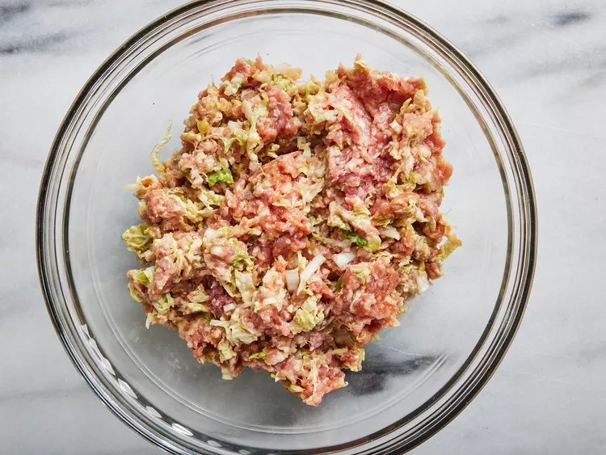
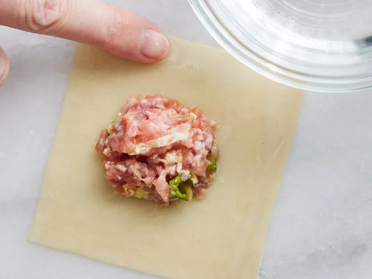
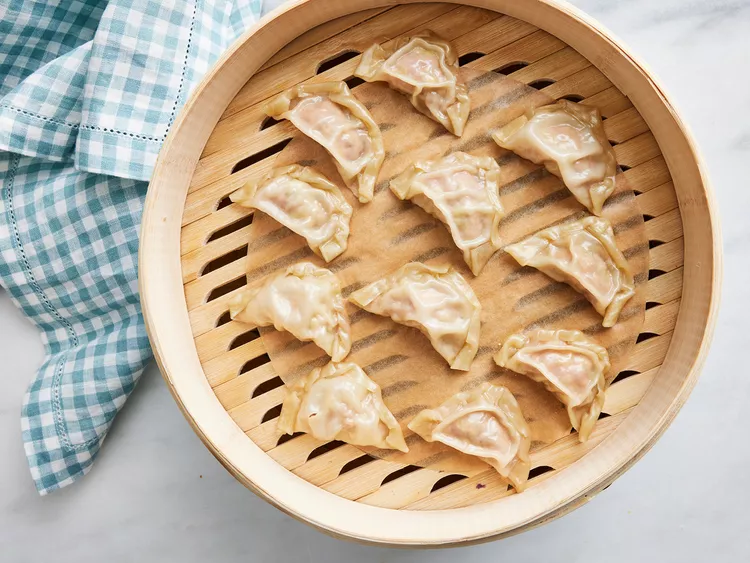

Home
Pork Dumpling Recipe

Dumplings that will make you smack your Grandma
Your going to need the following Ingredients
- 100 (3.5 inch square) wonton wrappers
- 1 ¾ pounds ground pork
- 4 cloves garlic, minced
- 2 tablespoons thinly sliced green onion
- 4 tablespoons soy sauce
- 3 tablespoons sesame oil
- 1 egg, beaten
- 5 cups finely shredded Chinese cabbage
Directions
- Combine pork, ginger, garlic, green onion, soy sauce,
sesame oil, egg and cabbage in a large bowl.
Stir until
well mixed..

- Place 1 heaping teaspoon of pork filling in the center of each wonton wrapper.
Moisten edges with water and fold over to form a triangle. Press edges firmly to seal.
Keep filled dumplings covered with a damp towel to prevent drying out until ready to cook.

- Arrange dumplings in a covered bamboo or metal steamer lined with parchment,
making sure they're not touching to prevent them from sticking together;
steam over simmering water until pork is cooked through, about 15 minutes.

- Serve hot and enjoy!